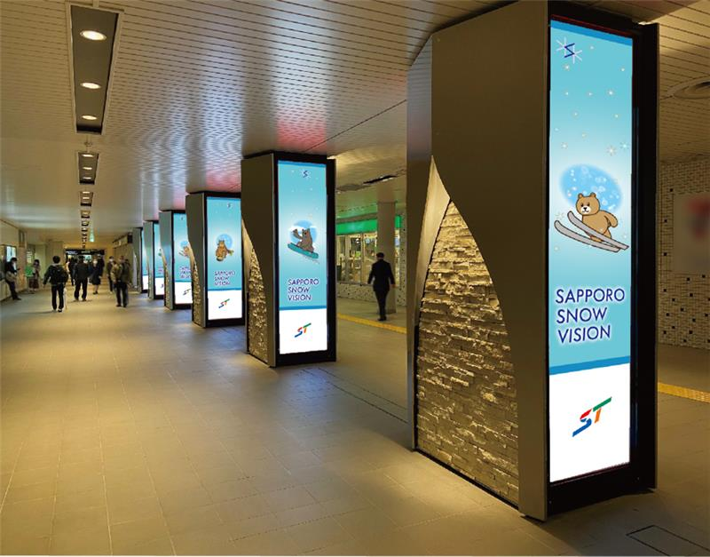
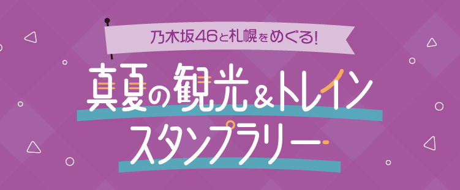
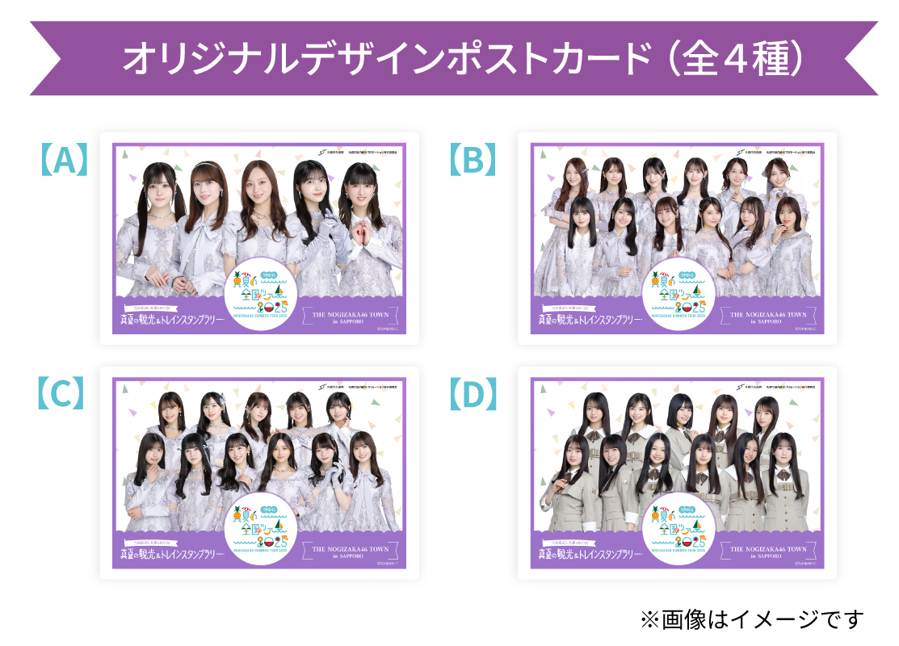

乃木坂46の夏の風物詩「真夏の全国ツアー」
「真夏の全国ツアー2025」北海道公演に合わせて
乃木坂46が札幌市（交通局・国内観光プロモーション実行委員会）とコラボレーション！
乃木坂46と札幌で夏の思い出を作りましょう★
#THE_NOGIZAKA46_TOWN_SAPPORO
乃木坂46x観光地 コラボポスター
乃木坂46メンバーと札幌市内の観光地がコラボした、メッセージコメント入りオリジナルポスターが札幌市営地下鉄・札幌市電の駅や車内、観光地に展開！
コンサート会場最寄りの「真駒内駅」構内と「大通駅」交流拠点のデジタルサイネージ「SNOW VISION」にも登場！
乃木坂46が彩る札幌の街をぜひお楽しみください！
デジタルサイネージ「SNOW VISION」イメージ

乃木坂46と札幌をめぐる！
真夏の観光＆トレインスタンプラリー
真夏の観光＆トレインスタンプラリー
札幌市（交通局・国内観光プロモーション実行委員会）とコラボしたトレインスタンプラリーを開催します！

札幌市営地下鉄沿線駅・施設に設置される5か所のスポット、札幌市内観光地10か所に設置される14か所のスポット、コンサート会場の「真駒内セキスイハイムアイスアリーナ」を合わせた全20か所のスポットで乃木坂46のオリジナルスタンプ画像が取得可能！
「★特典★」としてスタンプを8、10、12、14個集めるごとに、オリジナルデザインポストカード（全4種）を1枚印刷できる、プリント予約番号がもらえます。
※印刷は無料です。
※取得個数に応じて発行されるオリジナルデザインポストカードの絵柄は指定です。
さらに所定の条件を達成すると、抽選で「★★★スペシャル特典★★★」観光地コラボポスターメンバー直筆サイン入りB3ポスター（全10種）を合計20名様にプレゼント！
コンサートチケットの有無にかかわらず、どなたでもご参加いただけます！
詳細は下記からご確認ください。
■スタンプ取得可能期間
2025年6月27日（金）～9月29日（月）
- ※駅構内に設置されたスタンプは始発から終電まで、取得が可能です。
- ※札幌市内観光地に設置されたスタンプは、各施設の営業時間のみ取得が可能です。各スポットにお越しの際は事前に営業時間をご確認ください。
- ※札幌市内観光地のスタンプは一部有料スポットに設置されています。
- ※真駒内セキスイハイムアイスアリーナのスタンプ設置スポットは北海道公演開催の7月5日(土)、7月6日(日)のみ設置されます。 開演後はスタンプ設置スポットが撤去される可能性がございますので、早めにご取得いただくことをおすすめいたします。
- ※札幌市内観光地および真駒内セキスイハイムアイスアリーナのスタンプ設置スポットは天候などの事由により、設置を中止する場合がございます。
- ※スタンプラリーに関するお問い合わせは、各駅・各観光地では受けかねます。ページ下部に記載の運営事務局へお問い合わせください。
スタンプラリー詳細・参加登録はこちらから
トレインスタンプラリーは、AndroidまたはiOSデバイスのみご利用いただけます
★★乃木坂46と札幌をめぐる！
真夏の観光＆トレインスタンプラリー 特典★★
真夏の観光＆トレインスタンプラリー 特典★★
★特典★
スタンプを8、10、12、14個集めるごとに、オリジナルデザインポストカード（全4種）を1枚印刷できる、プリント予約番号がもらえます。
【オリジナルデザインポストカード（全4種）】
スタンプ 8個取得特典：
ポストカード 6期生ver.
スタンプ10個取得特典：
ポストカード 3期生ver.
スタンプ12個取得特典：
ポストカード 4期生ver.
スタンプ14個取得特典：
ポストカード 5期生ver.

■ポストカード印刷可能期間
2025年6月27日（金）00時00分00秒～9月30日（火）23時59分00秒
-
※ポストカードの印刷方法は下記ページからご確認ください。
https://gallery.conprin.com/howto/present_sej_11.html -
※ポストカードは全国のセブン‐イレブン店内マルチコピー機でプリント予約番号を入力すると印刷いただけます。プリント予約番号を使用し、お客様ご自身で印刷ください。
ただし、本サービスはマルチコピー機の取り扱いがない一部店舗ではご利用になれませんので予めご了承ください。 近隣のマルチコピー機設置コンビニエンスストアは こちらからお調べください。 -
《検索方法》
「マルチコピー機」にチェックを入れて検索 - ※取得個数に応じて発行されるオリジナルデザインポストカードの絵柄は指定です。
- ※1つのプリント予約番号で印刷いただけるオリジナルデザインポストカードは1枚のみです。
- ※プリント予約番号はスタンプの種類に制限なく、集めたスタンプ数に応じて、スタンプラリーサイト上の「特典を確認」よりご確認いただけます。
- ※オリジナルデザインポストカードは【2025年6月27日（金）00時00分00秒～9月30日（火）23時59分00秒】の期間中のみ印刷可能です。期間外の印刷や郵送対応はできかねます。
★★★スペシャル特典★★★
スペシャル特典応募条件を達成された方は、スペシャル特典への抽選にご応募いただけます。
なお、抽選結果につきましては、10月中旬ごろの商品の発送をもって発表にかえさせていただきます。
■応募可能期間
2025年6月27日（金）00時00分00秒 ～9月30日（火）23時59分59秒
■スペシャル特典応募条件
①指定の12スポットのスタンプを全て取得する
＜対象スポット＞
②合計で13スタンプを取得する
※駅構内に設置されたスタンプは始発から終電まで、取得が可能です
※札幌市内観光地に設置されたスタンプは、各施設の営業時間のみ取得が可能です。各スポットにお越しの際は事前に営業時間をご確認ください。
※札幌市内観光地には一部有料スポットがあります。
※真駒内セキスイハイムアイスアリーナのスタンプ設置スポットは北海道公演開催の7月5日(土)、7月6日(日)のみ設置されます。 開演後はスタンプ設置スポットが撤去される可能性がございますので、早めにご取得いただくことをおすすめいたします。
※札幌市内観光地および真駒内セキスイハイムアイスアリーナのスタンプ設置スポットは天候などの事由により、設置を中止する場合がございます。
■スペシャル特典
観光地コラボポスターメンバー直筆サイン入り
B3ポスター 全10種（各2名様）
※ご希望のメンバーを選択してお申込みいただけます。
スタンプラリー詳細・参加登録はこちらから
トレインスタンプラリーは、AndroidまたはiOSデバイスのみご利用いただけます
注意事項
- ・トレインスタンプラリーはお一人様1アカウントでお楽しみください。
- ・スタンプ画像の取得可能期間と実施内容は事前の予告なく変更になる場合がございます。あらかじめご了承ください。
- ・イベント内容は一部有料となります。
- ・スタンプ画像を取得するために、一時的に駅の改札を出入りすることはできません。改札を出る際は必ず精算していただき、再入場される際は改めて乗車券をご購入いただきますようお願いいたします。
- ・特典の転売行為やスタンプ画像の不正取得は禁止とさせていただきます。
- ・スタンプ画像を取得するための二次元コードを拡散する行為は禁止とさせていただきます。
- ・個人間取引などに関するトラブルの責任は一切負いかねます。
- ・スペシャル特典お申込みに際して、不正な行為があったと当事務局が判断した場合、事前に通知することなくお申込みを無効または取り消しとさせて頂くことがございます。あらかじめご了承ください。
- ・インターネット通信料・接続料はお客様の負担となります。
- ・特典のポストカードにつきましては、トレインスタンプラリーシステムで取得されたプリント予約番号を使用し、お客様自身で印刷ください。
- ・ご登録いただいた個人情報は抽選、発送、お問い合わせへの返信等、札幌市ならびに事務局が実施する施策の運営のみに利用させていただきます。
- ・札幌市における個人情報の取り扱いについては、HPよりご確認ください。
札幌市 個人情報保護について：https://www.city.sapporo.jp/somu/kokai/hogo.html - ・当該施策の運営委託に必要な範囲で委託先に提供する場合や当該施策関係会社に提供する場合を除き、個人情報を応募者の承諾なく第三者に提供することはございません（法令等により開示を求められた場合を除く）。
- ・本サイトでは、サイトコンテンツの利便性向上や利用状況に関する統計分析のために、Googleアナリティクスを導入してユーザー属性とインタレストカテゴリに関するアクセス解析をおこなっております。Googleアナリティクスはクッキーを使用してご利用状況を収集しますが、個人を特定する情報は含まれておりませんので、お客さまの個人情報をGoogle社に提供することはありません。クッキーの使用を希望されない場合は、ご本人のブラウザの設定を変更することにより、クッキーの使用を拒否することができます。その場合、一部または全部のサービスがご利用できなくなることがありますので予めご了承ください。また、設定方法は、ブラウザにより異なります。 クッキーに関する設定方法は、お使いのブラウザの「ヘルプ」メニューでご確認ください。
撮影に関するご案内
メディア取材や映像コンテンツ制作を目的として、映像収録や 写真撮影のカメラが入る場合がございます。
撮影されたものはSNS、メディアなどで公開される場合がございますので、あらかじめご了承ください。
【THE NOGIZAKA46 TOWN in SAPPORO】に関するお問い合わせ
事務局期間：2025年6月27日（金）～9月30日（火）10:00~17:00※土日祝日を除く